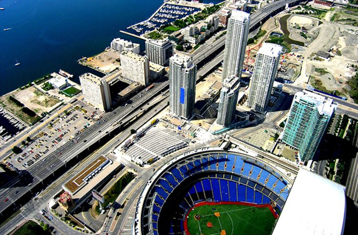

Places to go in Toronto
Royal Ontario Museum-
St. Lawrence Market-
Hockey Hall of Fame-
Rogers Centre-

CN Tower-
- Royal Ontario Museum- Go and see the new and classic art with a modern feel.
The hours of operation for the Royal Ontario Museum are:
- Monday Closed
- Tuesday Closed
- Wednesday 10am-5:30pm
- Thursday 10am-5:30pm
- Friday 10am-5:30pm
- Saturday 10am-5:30pm
- Sunday 10am-5:30pm
- St. Lawrence Market- Shop for home-grown food and a wide variety of food. All the food is fresh and ready to be eaten.The hours of operation for the Market are:
- Monday Closed
- Tuesday 9am-5pm
- Wednesday 9am-5pm
- Thursday 9am-5pm
- Friday 9am-5pm
- Saturday 5am-4pm
- Sunday Closed
- Hockey Hall of Fame- Go and see the greats of hockey lore. Here you will find the best players in history and relive their lives as NHL players. The hours of operation for the Hokcey Hall of Fame are:
- Monday 10am-4pm
- Tuesday 10am-4pm
- Wednesday 10am-4pm
- Thursday 10am-4pm
- Friday 10am-4pm
- Saturday 10am-4pm
- Sunday 10am-4pm
- Rogers Centre- Go and see the Toronto Blue Jays play in the beatuiful Rogers Centre. The Rogers Centre opened in 1989 and is one of the nicest ball parks you will ever see.
- CN Tower-The CN Tower is an observation tower where you can see the whole city. It's name origins from Canadian Nation which was the company that built the tower. The hours of operation for the CN Tower are:
- Monday 10am-10pm
- Tuesday 10am-10pm
- Wednesday 10am-10pm
- Thurday 10am-10pm
- Friday 10am-10pm
- Saturday 10am-10pm
- Sunday 10am-10pm